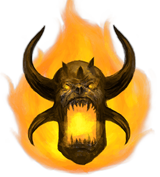
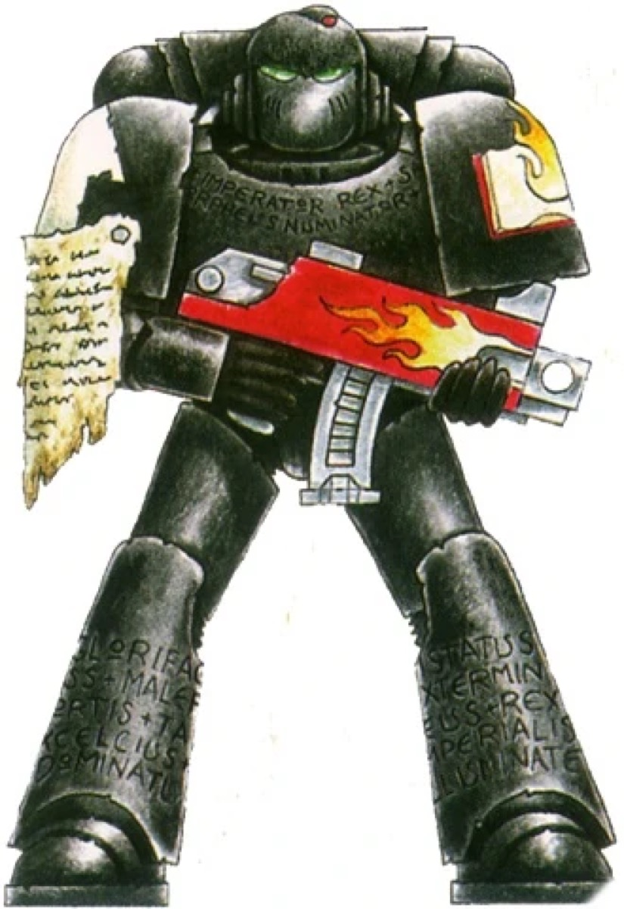
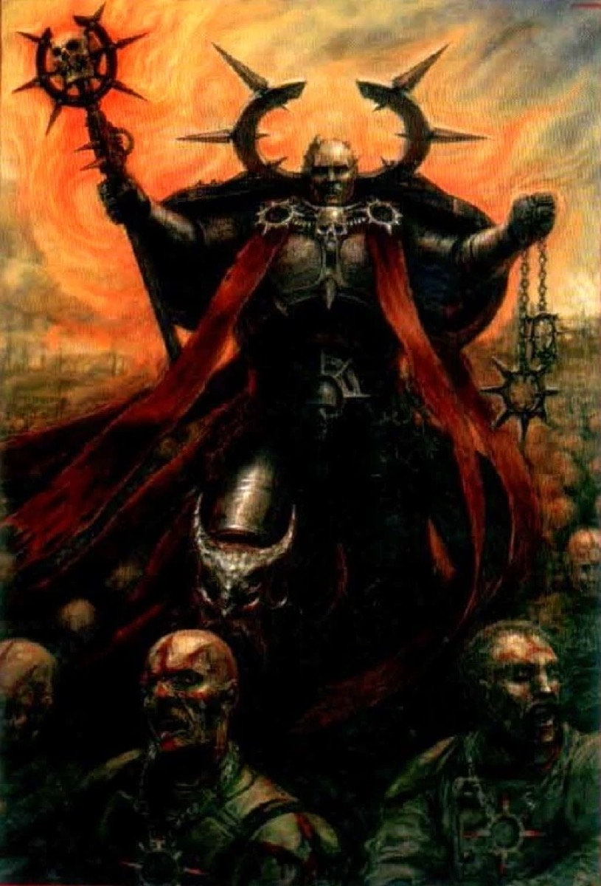

Word Bearers
| Word Bearers XVII Legion · the Imperial Heralds · the Iconoclasts | |
|---|---|
 Icon of the Word Bearers: the burning skull above the book of Lorgar | |
| Founding | Late Unification Wars (First Founding) |
| Legion number | XVII |
| Primarch | Lorgar, Daemon Primarch of Chaos Undivided |
| Ruling body | The Dark Council of the Dark Apostles |
| Homeworld | Colchis (recruiting world); now Sicarus and Ghalmek |
| Fortress | The Basilica of the Word, Sicarus, Eye of Terror; Ghalmek, the Maelstrom |
| Allegiance | Loyalist (publicly, until 005.M31); Traitor, Chaos Undivided |
| Colours | Gunmetal grey (before); crimson and bone (since) |
| Battle cry | Verses of the Book of Lorgar, chanted in unison |
| Organisation | Before: Chapters and Grand Companies. After: Hosts, each led by a Dark Apostle |
| Notable battles | |
| Monarchia on Khur; Battle of Calth; Isstvan III; Drop Site Massacre; the Shadow Crusade; Siege of Terra; the Wars of Faith; the Fall of Cadia | |
| Notable members | |
| Lorgar, Kor Phaeron, Erebus, Argel Tal, Zardu Layak, Kor Megron, M'kar the Reborn, Periclitor the Foresworn | |
The Word Bearers, first called the Imperial Heralds, were the XVII Legion of the Space Marine Legions. They were made to carry the Imperial Truth to the worlds of the Great Crusade, in the era when the Emperor of Mankind meant to end the worship of gods. Under their primarch, Lorgar, they turned the doctrine on its head. They came to believe the Emperor divine, were told by him to stop, and went in search of gods that would accept their worship. They found the powers of the Warp, and the Legion was the first of the twenty to take their side. The Word Bearers organised the lodges that corrupted Horus, carried the fight to the Ultramarines at Calth and, after the Heresy, remained the most organised of the Traitor Legions.[1]
The Word Bearers are today a priesthood in arms. They have kept their ancient Chaplains, whom they call Dark Apostles, and their ritual of battle, and they worship all four of the Ruinous Powers together, as Chaos Undivided, and do not set one above the others. Their war on the Imperium of Mankind is called a War of Faith, and its aim is not to destroy but to convert, or failing that to kill. Wherever they go, they leave behind them the seed of a cult. In the Era Indomitus, with the opening of the Great Rift, their primarch is reported to have returned from ten thousand years of silence, and the Word Bearers have been seen on more worlds than at any time since the Heresy.[2]
History
[edit]The Imperial Heralds
[edit]
The XVII Legion was raised on Terra late in the Unification Wars and its warriors were drawn from the sons of the Emperor's defeated enemies. They were trained from youth to know the crimes of their fathers and the price of forgiveness, and they went to war with a zeal that their brothers found strange, the cold fury of the condemned and the redeemed. The Emperor named them the Imperial Heralds. They were meant to fight the hardest part of the Great Crusade, the war against the old gods, and the other Legions called them the Iconoclasts for the temples they cast down and the idols they ground to dust. Their first duty was to erect in the places of those shrines the monuments of the Imperial Truth, which taught that there were no gods and that man had only himself to depend on.[3]
For some decades they served without a primarch, under their officers and their Chaplains, and their conduct set the temper of the Legion. Its warriors believed that they had been made for a sacred task. It was this belief, left without an object by the Emperor's own ban on religion, that made the Legion ready for what came.[3]
The coming of Lorgar
[edit]The primarch of the XVII Legion, Lorgar, was recovered on Colchis in 857.M30. The world was feudal and priestly, ruled by a caste called the Covenant, and its people believed that a divine being would come to lead them into a new age. Lorgar had grown up in its temples and had written a body of scripture of his own, the Word. When the Emperor arrived, he took him for that divine being, and knelt, and the Emperor, who said nothing, gave him command of the Heralds. He renamed them the Word Bearers.[3]
Lorgar's conquests were slow and thorough. He introduced the office of Chaplain in its Colchisian form, he raised temples to the Emperor on the worlds the Legion won and he left priests behind him to teach the faith. Where other Legions took several worlds in a campaign, the Word Bearers took a few, and the delay did not escape the clerks of the War Council. The other primarchs regarded Lorgar as the least martial of their number. Roboute Guilliman, whose Legion was the opposite of the Word Bearers in nearly every particular, was among the sharpest of his critics.[3]
The rebuke on Khur
[edit]The Emperor learned of the new faith when the clerks laid the figures before him. He sent the Ultramarines, with Custodians and Malcador the Sigillite, to Khur, a world on which the Word Bearers had built the city of Monarchia, a capital of temples to himself. The Ultramarines razed it. The whole of the Word Bearers was assembled before the ruins, and the Emperor appeared and made every warrior kneel, Lorgar included, and said to them that he was not a god and would not be worshipped. Then he left. The Legion's chroniclers record that Lorgar lay for days without speaking, and that those around him thought he would die.[3][1]
The Pilgrimage
[edit]Imperial records after Khur are divided in two. The public record shows a chastened Legion that returned to the war with new energy. The truth, as the Inquisition has pieced it together, is that Lorgar went in search of a god that would receive the devotion the Emperor had rejected. He travelled for several years, to the sites of old cults and the scars that Chaos had left on the galaxy, and learned the names of the four powers. In a place his Legion afterward called the Eternity Gate, he saw them as they are, and concluded that this was the divinity he had been seeking and that the Emperor had hidden it. The Legion spent over four decades under a mask of loyalty. It removed over the decades the Terran-born warriors who were least likely to accept the new faith, and raised the rest in the new belief. In the Heresy it culled its remaining doubters at Calth.[1]
The instrument of the conspiracy was the warrior lodge, a form of fraternity that had grown up in the Legions during the later Great Crusade. Erebus, First Chaplain of the Legion, spread it from Legion to Legion, and drew into the secret men such as Calas Typhon of the Death Guard. His greatest success was Horus. When the Warmaster fell sick on Davin from the Anathame, the Word Bearers directed his officers to the temple of the Serpent Lodge, whose priests healed him with the touch of the Ruinous Powers. In the aftermath the Word Bearers had in Horus the one primarch whom the others would follow.[1]
The Horus Heresy
[edit]
The Word Bearers' war on the Ultramarines opened with the Furious Abyss, a battleship of unusual size built in secret by the Dark Mechanicum at Thule, which sailed for Ultramar in 005.M31 under Kor Phaeron. It destroyed the Ultramarines vessel Fist of Macragge on the way, and brought the Legion to Calth, whose three sister worlds were broken by geo-nuclear strikes. Millions of cultists were used as shields and daemons were loosed from the Warp. Guilliman and much of his Legion were away. The Ultramarines who had been born on Calth, under Captain Remus Ventanus and the Legion's fleet, fought a retreat to fortified positions, held them and broke out to retake the planet's defence lasers. The Word Bearers turned the orbital defences against the star Veridian, which stripped its outer layers and in time made Calth's surface uninhabitable. At the same time Erebus's rite raised the Ruinstorm, a Warp tempest that cut Ultramar off from the rest of the galaxy and kept the Ultramarines from reinforcing Terra. Ultramarines reinforcements from Macragge arrived and drove the Word Bearers out. Kor Phaeron fled to the Maelstrom. The attack failed to destroy Guilliman, but the Ruinstorm did what it had been raised to do.[1]
Lorgar, meanwhile, had a purpose of his own at Calth. He used the battle to rid himself of the Word Bearers he no longer trusted, and the thousands of warriors, Gal Vorbak among them, left behind in an underground war beneath the dead city were never reinforced.[1]
Word Bearers fought at Isstvan III and in the Drop Site Massacre at Isstvan V, where the Legion's possessed warriors, the Gal Vorbak, or "Blessed Sons", fought beside their primarch and were butchered by Corvus Corax. Lorgar and his Legion then went into Ultramar with the World Eaters and the Shadow Crusade began. In its course Lorgar gave his brother Angron to Khorne, to end the agony of the Nails.[4]
After the Warmaster was wounded at Beta-Garmon, the Word Bearers gathered at Ullanor. Lorgar thought that Horus had grown too weak, and planned to take the Warmaster's place and strike with the Emperor's Children. The plan was betrayed and failed. Horus sent him from the muster under pain of death. About five thousand warriors of the Legion, under the Dark Apostle Zardu Layak, remained with the Warmaster and fought at Terra. The older Imperial accounts, which place Lorgar himself at the Siege, are no longer held to be correct.[1][2]
The Siege of Terra
[edit]Layak's Word Bearers, with the Legion's first Chapters, took part in the assault on the Imperial Palace. The Legion's loss was heavy, and when Horus fell aboard the Vengeful Spirit in 014.M31 it fled with the other Traitors. The Imperium's records show no major fight between the Word Bearers and the loyalist Legions after the Heresy until the Great Scouring ended. The records of the Legion that survived are in the keeping of the Ordo Malleus.[5]
After the Heresy
[edit]The Word Bearers went to ground in the Eye of Terror and the Maelstrom. Their primarch, according to sealed accounts, rose to daemonhood in the years that followed, and the birth-cry of a Daemon Prince of Chaos Undivided is said to have echoed in the Warp for many days. He withdrew to the Templum Inficio, on the daemon world of Sicarus, and for ten thousand years allowed no one to disturb him. The Legion was ruled in his absence by a Dark Council, which sits in the Basilica of the Word. Its two great factions are led by Erebus and by Kor Phaeron, the Keeper of the Faith, who was once Lorgar's foster father and is today a Daemon Prince.[6]
From Sicarus and from Ghalmek, a hell-forge in the Maelstrom, the Word Bearers have prosecuted their Wars of Faith. They lack the numbers to take the Imperium, but they do not mean to. On each world that they attack they sow a cult, which will later become an uprising, or an invitation to a larger attack. Sometimes they work alongside the Alpha Legion, which they distrust, and sometimes against it. The Word Bearers have fought in the Black Crusades of Abaddon the Despoiler, though their leaders have always judged that the Warmaster is not fit to be their master.[6]
Lorgar left his isolation once, to join the Legion against a creature that had been hunting its warriors, and found that it was his brother Corvus Corax, who had been transformed by the Warp in a long vengeance. In their duel Corax drove him back, and promised, as the portal closed between them, to follow his scent. This is the last certain account of the primarch before the Era Indomitus.[6]
The Era Indomitus
[edit]Word Bearers warbands were present in the host of the 13th Black Crusade, and the Legion's Dark Apostles regarded the Fall of Cadia as a vindication. The destruction of Cadia, they preached, was the sign that the Emperor's hold was failing, and their cults were roused on a hundred worlds. In the years that followed, the Word Bearers have been seen at the edge of the Great Rift in strength. Their old rivals the Ultramarines and the Ultramarines' successors have been among the first to meet them, and Calth, where the Legion first tried to break the XIII, has been again a place of war.[2]
The most serious of the reports is that of the primarch's return. The Inquisition has had accounts from three sources, including a priest of the Ecclesiarchy taken prisoner and released, that a Daemon Primarch of Chaos Undivided has been seen in the open on the worlds of the Rift, preaching to armies and speaking to crowds. If true, it is the first time that Lorgar has appeared in the material universe since the Heresy. The Ordo Malleus has not confirmed the account and has not denied it.[2]
Organisation
[edit]Before the Heresy
[edit]The Legion was divided into Chapters, each with its own mark and its own character, and these were gathered in Grand Companies for a Crusade. Imperial scholars have the names of only a few. The Osseous Throne, whose badge was a throne of skulls before a golden flame, fought by wave assaults of infantry. The Void was the smallest, under seven hundred warriors, and served as a reserve behind the line. The Third Hand and the Iron Veil were destroyed in the underworld war beneath Calth. The Ark of Testimony, in crimson and gold, fought in the Shadow Crusade and raised the Templum Daemonarchia. Their officers were drawn from the Chaplains, and the Legion's command structure was more clerical than that of any of its brothers. The Legion fielded a large armoured arm and its own Cataphractii Terminators.[3]
The Word Bearers of today
[edit]The ruling body of the Legion is the Dark Council, a priesthood of its most powerful Dark Apostles. Beneath the Council are the Dark Apostles themselves, each of whom commands a War Host. A Host may be as small as a company, about a hundred warriors, or as large as a Chapter, and may exceed a thousand. The make-up of each Host varies with its Apostle. It may be armoured, or contain many Terminators, or be mostly cultists with a few Legionaries at its head. A Dark Apostle is served by a First Acolyte, his heir, and in the largest Hosts by a Coryphaus, his senior war leader, who sings the responses in the rituals.[6]
The elite of the Legion are the Anointed, who wear Terminator plate that has been blessed as a relic, and who stay in the Legion for life; Gal Vorbak, the possessed; and Dark Apostles of the first rank. The Legion also fields a large number of daemons, summoned for the purpose, and a body of mortal cultists, who are used less as an army than as a distraction and a sacrifice. The Legion's fleet is built around the old battle-barges, the best known of which is the Furious Abyss, and its war engines are made in Ghalmek.[6]
Combat doctrine
[edit]A Word Bearers host fights as a congregation. Before a battle the warriors assemble to chant verses of the Book of Lorgar, and the Dark Apostle decides how the engagement is to be fought, often by divination: the pattern of cast bones, the entrails of a captive or the position of the stars. The warriors accept his orders without question. They advance beneath standards of cursed iron to the sound of drums, chanting, and the endless repetition is said to be able to break the will of mortal defenders in the night before an assault. Daemons are summoned to fight beside them.[6]
The Word Bearers are not a Legion of subtlety. They are slow, and certain, and make no step backward. A Host that has been ordered to take a position holds it until it is destroyed, and the Astra Militarum has found that the cost of defeating them is out of proportion to the ground taken. Their cultists prepare the ground in advance of a major campaign, through agitation, bribery and the spread of the Book of Lorgar, so that a world is ready to rise on the day the Legion arrives.[6]
Beliefs
[edit]
The Word Bearers worship Chaos Undivided. They honour the four powers together, and they regard devotion to one alone, such as that of the Emperor's Children to Slaanesh, as a limited and decadent thing. They hold that humanity can be saved from the xenos, from the tyranny of the Emperor and from its own divisions only by turning to the Gods, and that the road is that of the Book of Lorgar, a book whose verses they carve in the plate of their armour and give to every world they take. Every warrior is a missionary. Those who hear are saved, and those who do not are put to death.[6]
The Word Bearers are the only Traitor Legion to have kept an office of Chaplain in its original form. A Dark Apostle is a priest, a war leader and a diviner, and his authority within his Host is complete. The Word Bearers' loyalty is to their faith first and to their primarch second, and they have at times placed the former above the latter. They hold the Ultramarines in a special hatred, because Guilliman burned Monarchia and because he is, in the Legion's eyes, the Emperor's chosen instrument.[6]
Homeworld
[edit]Colchis was a feudal world, where Lorgar was raised, and it was the Legion's recruiting ground for several centuries. It was visited by the Great Crusade in 857.M30 and later passed out of Imperial hands. The Legion's present homes are in the Eye of Terror and the Maelstrom. Sicarus is a daemon world on which stands the Basilica of the Word, the seat of the Dark Council, and the Templum Inficio. Ghalmek is a hell-forge from which the Legion draws its war engines and its vessels.[6]
Gene-seed
[edit]The gene-seed of the Word Bearers was held pure in the Great Crusade, but it carried a flaw, a strong disposition to belief and obedience that amounted at the edge to fanaticism. In the millennia since the Heresy it has been warped by the Warp and its warriors have suffered mutation. Mutation is not, in the Word Bearers, regarded as a curse. A warrior marked by Chaos is favoured in his Host, and a few are chosen to take a daemon into themselves and become Gal Vorbak, a possession that is said to be at once a sacrament and a risk.[6]
Heraldry
[edit]The Legion wore gunmetal grey in the Great Crusade, with inscriptions from the Imperial Truth on the plate and on the surcoats of its Chaplains. After the Heresy it turned to crimson, which the Word Bearers call the red of the Traitor, with silver and bone fittings. Its icon is a flaming horned skull on an open book, worn on the shoulder, and the Chapters of the old Legion each had a mark of their own: a pierced hand, a star, a stack of bone, a pair of hands and a mouth that was sealed. Its banners bear lines from the Book of Lorgar, and its warriors bear the scripture on their armour and, often, on their flesh.[6]
Notable members
[edit]- Lorgar, primarch, now a Daemon Primarch
- Kor Phaeron, foster father of Lorgar, Keeper of the Faith, Daemon Prince
- Erebus, First Chaplain, Dark Apostle
- Argel Tal, captain, leader of the Gal Vorbak
- Zardu Layak, Dark Apostle who fought at Terra
- Kor Megron, the Reaper of Rhodax, Daemon Prince
- M'kar the Reborn, once the Dark Apostle Maloq Kartho, killed at Calth and returned
- Periclitor the Foresworn, Daemon Prince, slayer of a Chapter Master of the Howling Griffons
See also
[edit]Notes
[edit]References
[edit]- ^ a b c d e f g Chronicles of the Heresy (sealed). Logos Historica Verita, Terra.
- ^ a b c d Records of the Indomitus Crusade (ongoing). Office of the Lord Commander.
- ^ a b c d e f Liber Primarchus (M32, revised M41). Administratum Archive, Terra.
- ^ Chronicles of the Heresy (sealed), Isstvan volume. Logos Historica Verita, Terra.
- ^ The Siege of Terra: Accounts of the Palace Defenders (M31, revised M32). Imperial Fists Archive, Terra.
- ^ a b c d e f g h i j k l Codex Imperialis (rev. 980.M41). Adeptus Terra.